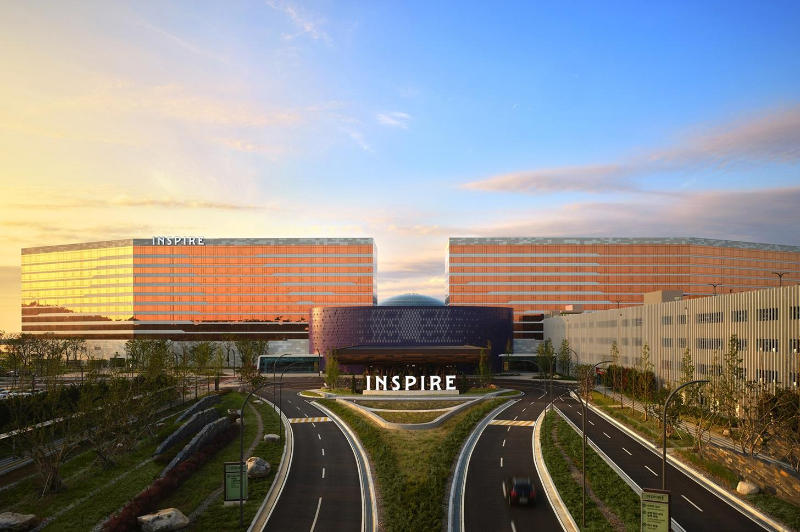

ENTP 추천 여행지
인천광역시

추천 이유
ENTP는 새로운 아이디어와 색다른 경험을 즐기는 성향입니다. 인천은 현대적인 도시 풍경과 다양한 문화 시설, 그리고 이색적인 체험을 즐길 수 있는 공간이 많아 ENTP의 호기심을 자극하는 여행지입니다. 특히 미래 지향적인 도시 설계와 독특한 교통수단을 경험할 수 있다는 점이 매력적입니다.
추천 여행 코스
- 송도 센트럴파크
- 수상택시 체험
- 트라이보울 문화공간 방문
- 송도 국제도시 야경 감상
추천 포인트
- 미래 도시 같은 현대적 분위기
- 수상택시 등 이색 체험 가능
- 문화·예술 공간 탐방
- 새로운 아이디어와 영감을 얻기 좋은 여행지